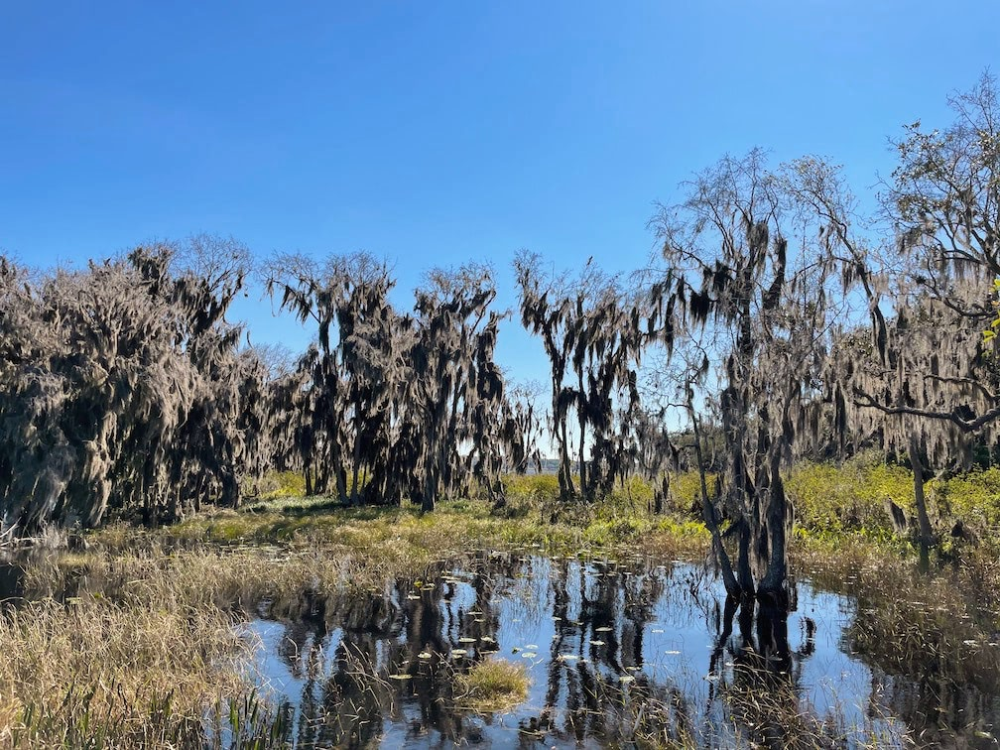
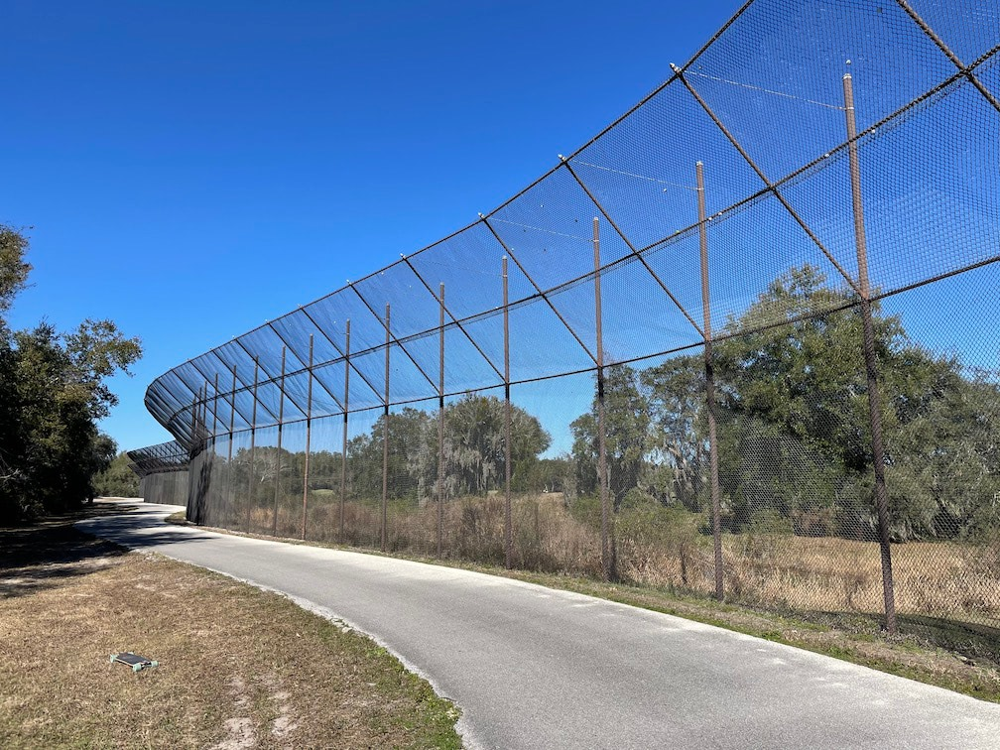
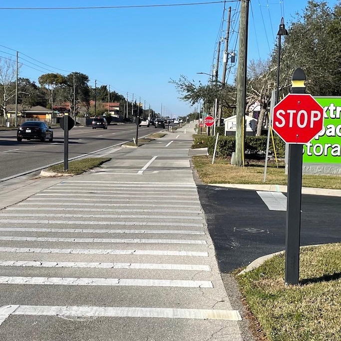

The last time I drove north out of Palm Beach county was last February, to a wedding in Georgia. I only packed a suit to wear to the wedding itself and a change of clothes to sleep in, in addition to what I wore in the car. None of that was appropriate for cold weather, which is of course what awaited me a couple hours north in February. Today was more of the same. On a whim, I decided to wake up early, drive to Orlando, and ride two trails. The day before had been cold and windy at home, but I figured Florida is Florida and it would be warm enough.
Wrong. Overnight was iguana-dropping weather. It only ever got up into the mid-50s in the sun. And I didn’t pack anything warm again beyond what I wore in the car. At least what I wore in the car is what I’m likely to wear every day: a thin hoodie. So I layered that over my sweat-wicking (ha!) t-shirt and shorts, and skated most of the day with my hands in my pockets, because I don’t even know if I own gloves anymore.
I began where the South Lake trail ends, somewhere west of Lake Minneola. And that trail ends abruptly like the Shel Silverstein sidewalk. But very quickly it began to hug the southern and eastern shores of the lake, swooping under trees with Spanish moss, and looking nothing like the palm-lined concrete avenues I’ve walked the last year. It even darted through a historic village, complete with a World War II museum.
Really, none of today felt like the Florida I know. There were hills! I took the first major downhill with a confidence born of ignorance, felt speed wobble for the first time in years, and immediately braked with my foot. On the next major downhill, I sat on the board and flew down like a luge, until again speed wobble made me panic-brake with my (raw) hands. Not great. On the third, I picked up the skateboard and walked. At least I maintained the strength of legs and conviction to skate every uphill the whole way.
One trail ends and the other begins at a nice little bike shop called Killarney Station (“Please no bikes or skateboards on porch”). The West Orange trail is about twice as long as South Lake, so the bike shop rest stop was only a third of the way through my total mileage. And this second part was definitely a lot more popular. Suddenly I was needing to weave around cyclists, joggers, and dogs. I saw many more people on roller skates than I could have expected, and I made two toddlers’ days. A guy with a helmet and mask almost completely obscuring his face, hands in pockets, gliding by on a big-wheeled skateboard? Might as well have been a muppet.
I also had the distinct anxiety of going past a high school as classes ended, and a middle school as the after-school period must’ve ended. Which meant stopping and weaving through small cliques of kids crowded around a phone or walking three across. I bet they didn’t find me as cool as the toddlers. The West Orange trail also has a fun stretch down the median of the main drag in Winter Garden. Never seen that before!
Between that stretch through a downtown and the final stretch, there was a nice segment through some woods and around the perimeter of a golf course. Most of the latter had tall chainlink awnings draped over the path, I guess to protect from any golf balls that way overshot the green. Wishful thinking, definitely only there as a confidence boost to the club members and not for legal reasons. I finally got comfortable carving back and forth on the downhills here, doing my best maple leaf. Or, yes, that one scene from Walter Mitty that I always think about.
The last section was essentially a sidewalk next to a busy street, with parks department funding to pave a little wider and smoother. I passed the trailhead where I’d parked my car at the start of the day and considered stopping early. At this point my calves were sore and my hips were getting there, but I didn’t want to be a quitter. If only there had been a sign.
There actually were suddenly many little stop signs specifically for the trail, instructing pedestrians to stop at every driveway into stores and strip malls. There were also two roadside cross memorials. If only I had heeded their warning, because the trail ended rather unceremoniously at a major intersection. According to the lone trail marker, a new phase was planned, continuing north along the sidewalk. In my tired, sore, and hungry mood, I silently suggested that the parks department forget it. But in hindsight, even that part felt safer than a lot of other ground I’ve covered. All in all, a pretty good day. I’ll make sure to check the weather forecast next time.